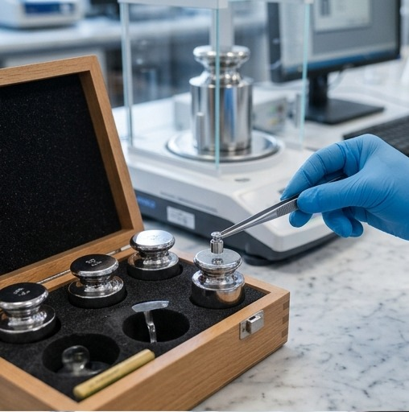
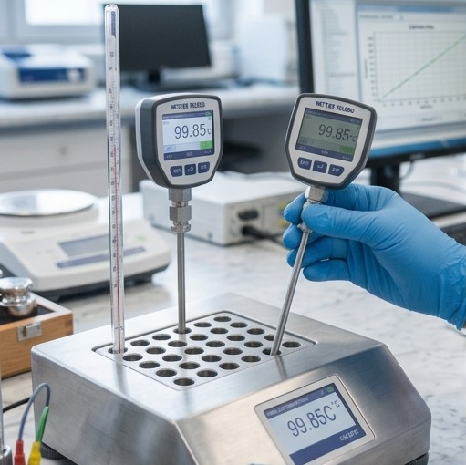
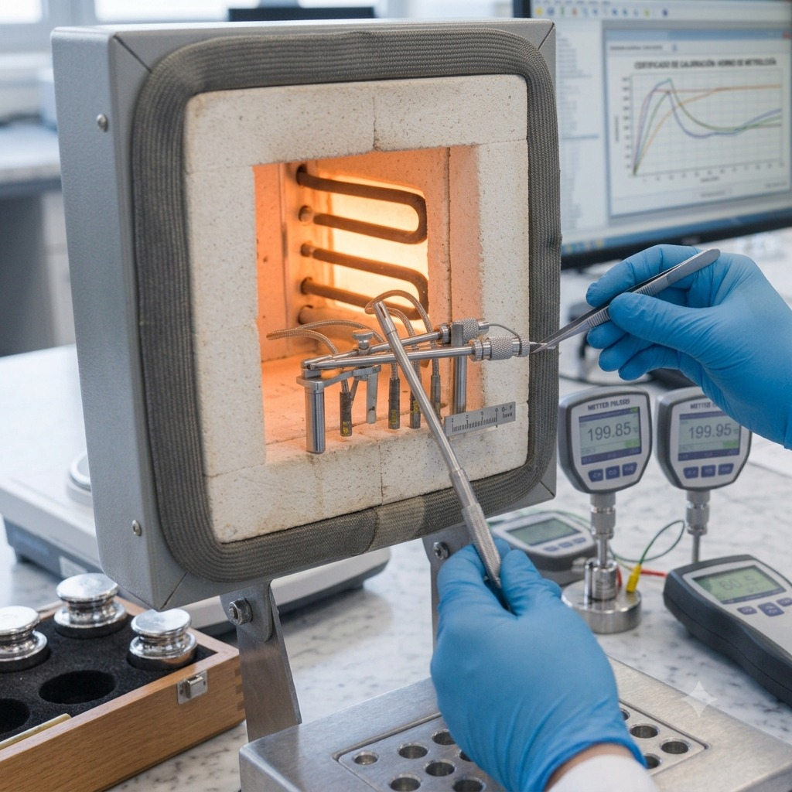
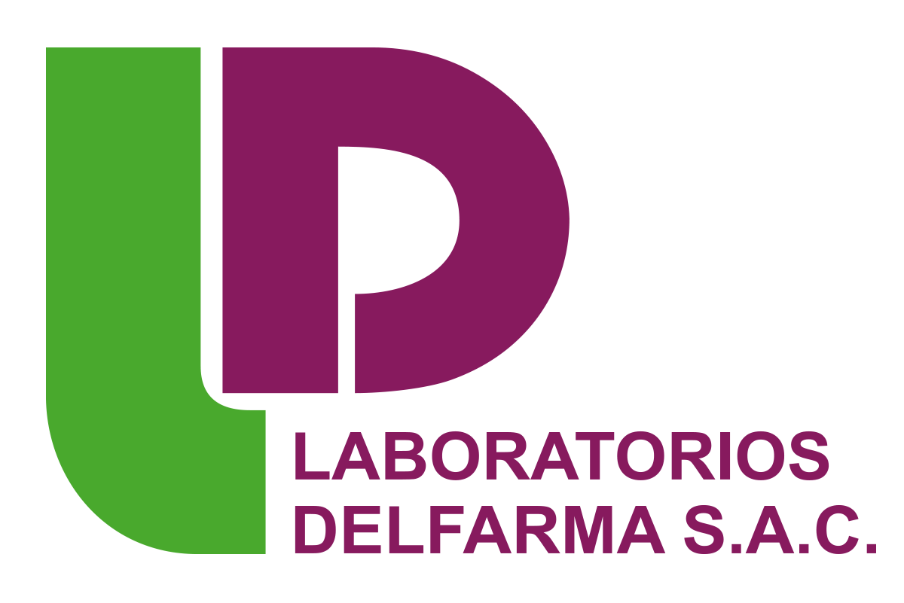

Nuestros servicios

Se evalúa la exactitud de la balanza mediante la aplicación de masas patrón en diferentes puntos de medición.

Se evalúa la exactitud del manómetro mediante la aplicación de diferentes valores de presión, comparando sus indicaciones con un patrón de referencia trazable.
Proceso mediante el cual se verifica el desempeño metrológico de un termómetro comparando sus mediciones con un patrón de referencia calibrado.
Consiste en determinar los errores de indicación de temperatura y humedad de un termigrómetro mediante la comparación con patrones certificados.

Se evalúa la exactitud del sistema de control de temperatura del horno mediante la comparación de su indicación con un patrón de temperatura trazable.
Se realizan ensayos para verificar que la incubadora mantiene las condiciones de temperatura especificadas durante su operación.
Evaluación del desempeño térmico de un baño María mediante pruebas que verifican el cumplimiento de las condiciones establecidas para su uso.
Se realizan ensayos para verificar que la plancha de calentamiento mantiene las condiciones de temperatura especificadas durante su operación.
Se registra la temperatura en diferentes ubicaciones del almacén durante un periodo determinado para identificar zonas frías, calientes y verificar su uniformidad.
Nuestros clientes
Hemos brindado servicios de calibración, calificación y mapeo térmico a empresas e instituciones de diversos sectores, garantizando calidad, precisión y trazabilidad en cada servicio.

Copyright © STCM, All Right Reserved.
Designed By HTML Codex Distributed By: ThemeWagon